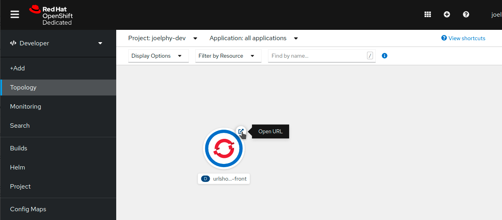
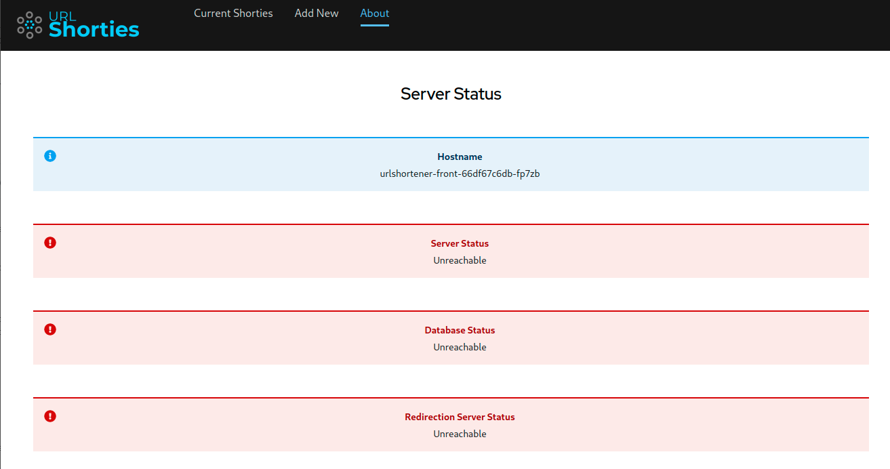

Deploy the Front-End
| In this section, you will see how to build a container for the front-end, if you want to skip this part and jump directly to the deployment part, you can also use a pre-existing image by jumping here. |
Build a Container
In order to deploy this applicatio, you can’t just use the same container that is used in development. That container is for a development environment and includes things such as a hot-reload server.
For your production environment, you will want to package up your React application and deploy in on an Nginx server. Ideally, it will be able to use environement variables to configure it and will be running as a non-root user for maximum security.
To find out more about how to build such containers, you can take a look at this blog post.
For this workshop, you will use the templates provided in that post.
First, start by copying the Dockerfile, nginx.conf and start-nginx.sh files from the aforementioned repository.
cd front
curl https://raw.githubusercontent.com/joellord/frontend-containers/main/react-project/Dockerfile.rootless -o Dockerfile
curl https://raw.githubusercontent.com/joellord/frontend-containers/main/react-project/start-nginx.sh -o start-nginx.sh
curl https://raw.githubusercontent.com/joellord/frontend-containers/main/react-project/nginx.conf -o nginx.confIn order to avoid copying all the node_modules folder in your container, you can also create a .dockerignore file.
echo "node_modules" > .dockerignoreYou are now ready to build this image.
docker build -t urlshortener-front .
If you are using podman instead of docker, you will need to use the --format=docker parameter to push your image to Docker Hub.
|
Push to a registry
Now that you have an image ready to be deployed, you can use the docker push command to store this image into a registry. Feel free to use any registry for this step.
If you don’t have access to an image registry, you can create a free account on Quay.io or skip to the deployment step and use the image that is publicly available.
Use the CLI tool to push this image to a registry. Make sure that you replace `%REGISTRY_USERNAME% with your actual username
docker push urlshortener-front %REGISTRY_USERNAME%/urlshortener-frontThis application image is now available to be used by OpenShift.
Deploy the front-end
You are now ready to deploy this image in your OpenShift cluster. Using the oc CLI tool, this can be done with a single command.
oc new-app %REGISTRY_USERNAME/urlshortener-frontIf you didn’t push your own custom image to a public registry, you can also use this image that has the latest version of the URL shortner front-end.
oc new-app joellord/urlshortener-front| If you run into an error message about hitting a rate limit, take a look at this blog post for more details on how to work around it. |
OpenShift will now go and download that image from your registry and create a new application with it.
Expose the application
The front-end has been deployed to your cluster, but there still isn’t a way to access it from the outside of the cluster.
To do so, you will need to expose the service that was just create with a Route. This can be done with a single command.
oc expose svc/urlshortener-front --port=8080You application is now fully deployed to OpenShift, and you should be able to see it in the Topology view of your application, as shown below.

Verify application status
If you click on the "Open URL" button next to your application in the topology view, it should open up your front-end application.
From here, you can view the list of redirection URLs (currently empty). You can also see the form to add new URLs (currently non-working). Finally, there is a third link in the navigation bar that leads to an "About" page. In there, you will see the status of the Node.js API, the Mongo database and the redirector service.

Right now, all indicators are red because the front-end doesn’t have a back-end to talk to. This will be adressed in the next section.